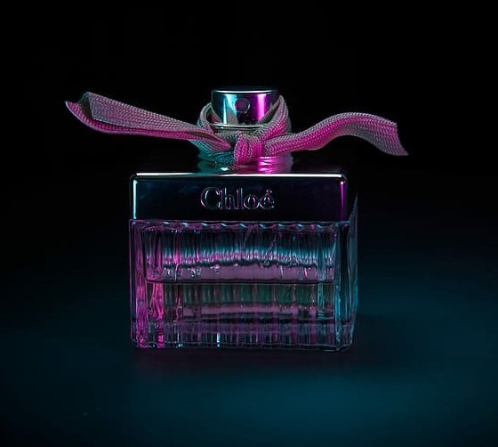

SULTRY NIGHTS
- Sultry Nights' is perfect for a special occasion,a date night, or any time you want to feel your most alluring and confident.
-
- The sleek and elegent bottle design is a perfect addition to any vanity or dressing table, and the convenient spray top makes it
easy to apply just the right amount of fragrance.
- Perfume is one of humanity's most beloved accessories. Its first use dates back to Mesopotamia over 3,200 years ago, and perfume has
only maintained or increased its popularity over time. As Coco Chanel once said, "No elegance is possible without perfume. It is the
unseen, unforgettable accessory of fashion that heralds your arrival and prolongs your departure."
- The first known chemist and perfumer, Tapputi, used flowers and oil to create her initial scents.
- Perfumers continue to use floral attars, or concentrated oils, as the base for many perfumes. The fragrant white flower of the
common jasmine plant is one of the most popular flowers used in modern perfumery.
- The jasmine note is irresistible for perfume fans because of its sweet, pleasant smell.
- Jasmine blossoms release their signature fragrance after sunset and grow with intensity through the night, peaking just before dawn.
The jasmine scent also creates relaxation, and it has a special relationship with the moon, growing stronger as the moon waxes toward
full.
- This mystical relationship between moonlight and the intoxicatingly sweet-scented flower makes for the perfect mix of for romance
and femininity.
- While you can find any number of perfumes fragranced with jasmine, the following fragrances are our
favorites — they're perfect for insipring you to feel sensual on date nights, powerful in board rooms, or relaxed and balanced
for everyday wear.

SULTRY NIGHTS
Rs.37,000/-